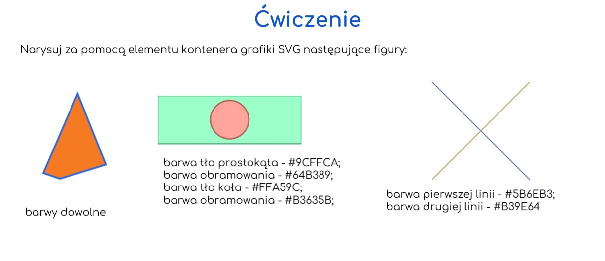

Dział 4
Naucz się jak tworzyć mapę odsyłaczy. Dowiedz się co to svg i jak to wykorzystywać.Znajdziesz tu czasem przydatne znaczniki.
Mapa odsyłaczy
Mapa odsyłaczy to odnośnik z wybranego obszaru grafiki. Danym
obszarom przypisuje sie określony odsyłacz i dzieli się na
wyznaczone części.
W zanczniku img umieszcamy usemap="#nazwa". Potem dajemy nowy znacznik map name="nazwa" i następnie w map kolejny znacznik area shape="react" coords="1, 1,50,50" href="link do strony" i zakończenie znacznika map.
Atrybut shape określa kształ odnośnika: react (prostokąt), circle (koło), poly (wielokąt), default (cała grafika).
Coords służy do określania współźędnych abtywengo obszaru.
W zanczniku img umieszcamy usemap="#nazwa". Potem dajemy nowy znacznik map name="nazwa" i następnie w map kolejny znacznik area shape="react" coords="1, 1,50,50" href="link do strony" i zakończenie znacznika map.
Atrybut shape określa kształ odnośnika: react (prostokąt), circle (koło), poly (wielokąt), default (cała grafika).
Coords służy do określania współźędnych abtywengo obszaru.
Grafika/obrazy
Mapa odsyłaczy to odnośnik z wybranego obszaru grafiki. Danym
obszarom przypisuje sie określony odsyłacz i dzieli się na
wyznaczone części.
W zanczniku img umieszcamy usemap="#nazwa". Potem dajemy nowy znacznik map name="nazwa" i następnie w map kolejny znacznik area shape="react" coords="1, 1,50,50" href="link do strony" i zakończenie znacznika map.
Atrybut shape określa kształ odnośnika: react (prostokąt), circle (koło), poly (wielokąt), default (cała grafika).
Coords służy do określania współźędnych abtywengo obszaru.
W zanczniku img umieszcamy usemap="#nazwa". Potem dajemy nowy znacznik map name="nazwa" i następnie w map kolejny znacznik area shape="react" coords="1, 1,50,50" href="link do strony" i zakończenie znacznika map.
Atrybut shape określa kształ odnośnika: react (prostokąt), circle (koło), poly (wielokąt), default (cała grafika).
Coords służy do określania współźędnych abtywengo obszaru.
Kanał alfa - dodatkowy kanał, definiujący przezroczystość wyświetlanych informacji graficznych. Jest on zapisywany razem z trzema wartościami barw składowych RGB. Wartość zerowa tego kanału oznacza pełną przezroczystość, zaś maksymalna – całkowitą nieprzezroczystość.
Dynamiczne obrazy
Mamy grafikę wektorową i rastrową.
Grafika rastrowa - bitmama, obraz jest osadzony w siatce/mapie zlożoną z pikseli. fice komputerowej i fotografii cyfrowej grafika rastrowa przedstawia obraz dwuwymiarowy jako prostokątną matrycę lub siatkę kwadratowych pikseli, widoczny na ekranie komputera, papierze lub innym nośniku wyświetlania. Popularne formaty plików rastrowych: jpg, jpeg, png, tif, bmp, gif, ico, tga, pdf (ten format jest akurat specyficzny, bo obsługuje również grafikę wektorową).
Grafika wektorowa - obraz opisany jest za pomocą figur geometrycznych lub brył geometrycznych, umiejscowionych w matematycznie zdefiniowanym układzie współrzędnych, odpowiednio dwu- lub trójwymiarowym. Grafika wektorowa ma także kilka wad – np. bardzo dużą złożoność pamięciową w przypadku obrazów fotorealistycznych. Grafika wektorowa nie sprawdzi się przy tworzeniu obrazów o bardzo dużej liczbie szczegółów.
Grafika rastrowa - bitmama, obraz jest osadzony w siatce/mapie zlożoną z pikseli. fice komputerowej i fotografii cyfrowej grafika rastrowa przedstawia obraz dwuwymiarowy jako prostokątną matrycę lub siatkę kwadratowych pikseli, widoczny na ekranie komputera, papierze lub innym nośniku wyświetlania. Popularne formaty plików rastrowych: jpg, jpeg, png, tif, bmp, gif, ico, tga, pdf (ten format jest akurat specyficzny, bo obsługuje również grafikę wektorową).
Grafika wektorowa - obraz opisany jest za pomocą figur geometrycznych lub brył geometrycznych, umiejscowionych w matematycznie zdefiniowanym układzie współrzędnych, odpowiednio dwu- lub trójwymiarowym. Grafika wektorowa ma także kilka wad – np. bardzo dużą złożoność pamięciową w przypadku obrazów fotorealistycznych. Grafika wektorowa nie sprawdzi się przy tworzeniu obrazów o bardzo dużej liczbie szczegółów.
Piksel - najmniejsza jednostkia "ekranowa", o jakimś kolorze. najmniejszy jednolity (przedstawiający konkretny kolor) element obrazu prezentowanego na wyświetlaczach urządzeń cyfrowych.
Antyaliasing - wygładzanie krawędzi
Dynamiczne obrazy - tworzone w oknie przeglądarki za pomocą np.znaczników w HTML.
Znacznik <svg> - rozpoczyna sekcje do grafiki wektorowej
rect - dale możliwosć tworzenia prostokątąta lub kwadratu
stroke - daje obramowanie
stroke-width - szerokość obramowania
fill - wypełnienie
Width i Height - odpowiedzialne za szerokość i wysokość
rect - dale możliwosć tworzenia prostokątąta lub kwadratu
stroke - daje obramowanie
stroke-width - szerokość obramowania
fill - wypełnienie
Width i Height - odpowiedzialne za szerokość i wysokość
Przykłady
Reszta różnych obrazów jest w prezentacji:
Prezentacja
Zadanie:
